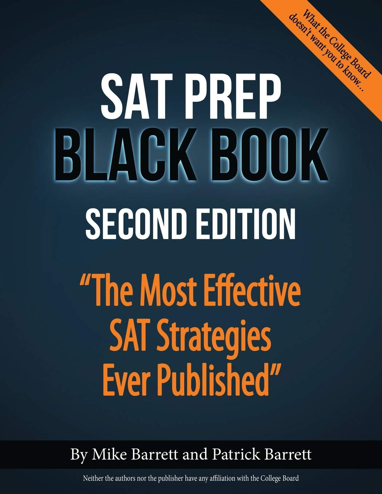

Here are the best tips and tricks for your SAT exam! Read more if you want to find out how to score a perfect 1600 on the SAT.
The SAT contains 5 sections:
Depending on the university you are aiming for, you may not need to take the Essay part of the test. Ask your teachers or do some research to find out which universities require you to take the SAT before applying for the exam.
Down below you will find all the tips and tricks you need for a perfect 1600 on your SAT, so make sure to read all of them to gain the knowledge you seek.
Before we dive into every section, here are some general tips for your SAT. You should apply these strategies in every SAT section to improve your score.
Someone will be there to read them for you at the beginning of the test, but you should be accustomed to them already. Don’t waste your exam time on reading the test’s directions.
As you go through each section, answer all of the questions you know the answers to first. Mark all the questions you don't know the answer and return to answer them later.
It is much easier to find the wrong answers, mostly because there are three of them. Once you found them, cross them off. This will leave you with a smaller chance of getting the answer wrong.
If you chose to take the SAT with an essay, you have to make sure that the examiner will be able to understand your handwriting.
You are allowed to write on your test booklet, which allows you to cross out answers, underline fragments of the passage and do anything you want to achieve the best result.
You need to be aware that a machine checks your answer, if you don’t score the answers clearly it may mark your answers wrong even though it was.
Even if more answers seem right, always remember that there is only one correct answer. Try to find the small differences between your choices and establish which one is the best.
There are no rules to prevent you from guessing anymore, so if you don’t know the answer to a question just try to guess it. You can come back and review it later, but don’t leave it blank.
Make sure to have enough time to answer all the questions and write your answers onto the answer sheet. If you find that you run out of time, you should just choose a letter and choose it for all the remaining questions. The best way to tackle this is to look at your answer sheet and try to figure out what letter is the least used (from the section you are at, of course). When guessing, score only that letter and this will increase your chances of answering correctly.
Reread the question a couple of times if you don’t understand it at first and even consider skipping the question to come back to it later.
During your SAT, you are not allowed to use a smartwatch or your phone, but you can still use any watch with no Bluetooth, Wireless, or any external connection in order to know how much time you've got left. This may be essential, especially if you struggle to finish in time.
You need to be accustomed to the test’s structure, and you can only enquire that by practicing. You should at least do the 10 practice tests that College Board puts at your disposal. You can find them for free by searching "Practice Test 1" (for instance).
Use your calculator wisely. Sometimes it is better not to use your calculator as you can waste a lot of time doing it.
The Critical Reading section is one of the toughest sections on the SAT, especially for non-native English speakers. It can even contain fragments of 1800s texts but don’t worry, with the SAT Reading tips and tricks below and some practice you will be able to score a perfect 400 on this section.
The Reading section of the test contains 52 questions and must be done in 65 minutes (including scoring on the answer sheet). Never ever don't focus on the time used per question, but per text. For instance, if you manage to answer a question in 15 seconds, don't slow it down. There might be a question which will take you 2 minutes! There are a lot of different approaches to this section, but we are going to discuss the best one. But first let’s see some general advice:
Take your time. Every question will give you the same number of points, so it doesn’t really matter which ones you get right. Try to be efficient with your time, but do not rush through the sections, this will do you no good.
There are a number of 1,022,000 words in the English language, learning pages and pages of meanings will do you no good. If you find a word that is unfamiliar to you just use the context of the sentence or paragraph to figure out what it means.
Even though words such as ‘not’ are written in caps most of the time, students still tend to overlook the negative meaning. This makes them make mistakes that they would not have done otherwise, so make sure to read the sentence carefully and give the appropriate answer.
If you cannot figure out what a word means just jump over it, read the rest of the question/sentence and then try to figure out what the author is trying to say.
Try to eliminate words like ‘mostly’, ‘most nearly’, and ‘main’ from the question, they are only there to mislead you. Just cross them off and read the question without them in it.
When answering questions like: ‘As used in line 20, “rule” most nearly means’ never choose the primary definition! Replace the word you want to choose in the context and if it makes sense, then that is the answer you are looking for (most of the time is a second definition of the word that you have not thought of).
Now that we are done with the more general advice, let’s see what tips and tricks actual SAT candidates can offer us! Remember that this advice may not work for everyone, so it is essential for you to find your own approach to the text. I would suggest trying out different options to find out which one works for you.
Just like the title suggests, this approach consists of reading the text first and answering the questions later. You have likely been thought to read the passage fast and then answer the questions, or skim the questions and then read the test, but these approaches are actually leaving you with little time.
You may not notice this, but the reason you must spend that much time on the questions is because you are reading the passage fast and don’t pay enough attention to the details. The key element of this approach is to try to read the text as carefully as possible and answer the questions without flipping back to them. If you spend 6-8 minutes to read every passage, this will leave you with enough time to answer all the questions correctly.
In order for this method to work, you have to resist the urge to flip back and forth between the passage and the questions. Actually, the only time you should be flipping back is when your question looks something like this: ‘As used in line 44, “weight” most nearly means…’ or ‘Which choice provides the best evidence for the answer to the previous question?’. But even with these types of questions, there is a way for you to answer them faster and stop wasting precious time.
The worst thing you could do if checking all the options. This will make you waste a lot of time. Instead, think about where you have seen the information the question refers to: at the beginning, in the middle or at the end of the passage. This will give you the opportunity to eliminate at least two answer choices.
Bonus tip: don’t forget to underline your answer in the passage so it’s easier for you to check your answers once you have finished. You should spend the most time reading the history and science passages as they are the hardest ones to comprehend. They contain specific words and riddles that make them very hard to understand, so if you want to avoid reading a paragraph and have no idea what it was talking about, I suggest spending as much time as you need to read it.
Finally, do not waste time duelling on a question. Not only does it affect your time, but also your confidence. If you just do not know the answer, mark the question and guess. You can come back to it after you have finished the rest of them.
Because the Reading Section is such a difficult section, you will have to maximize your score in the writing section and get at least 40/44. Overall, the writing section is not that hard if you know the basic grammar rules, but many students still make mistakes. That stops today! Down below are the only SAT writing tips you need to score perfectly in this section.
This is the key to having a high score in the writing section. 70% of the questions are grammar-based questions so you really need to know your rules.
It is highly recommended to read the whole passage so you get an general overview regarding the main subject from that pasage. This would help you answer almost every kind of Readning Comprehension from the Writing Section.
The first thing you should do when you see the SAT brackets ( [1], [2], [3] ), you should know you are going to be faced with a placement question. Go directly to that question and try to solve it as you read the passage.
Don’t check your remaining time constantly. Because you have so little time on each question, you don’t want to keep checking the clock and wasting more of it. Just focus on answering the questions.
Think each question thoroughly before attempting to answer it.
Every usage and sentence correction question is based on a single sentence. Each question is designed to test your knowledge of basic sentence grammar, structure, and word choice. Make sure you have enough time to read and understand each question.
Make sure you understand the rules for using commas (,), colons (:), semicolons (;), dashes (–), and apostrophes (')
Practice is the key to having a perfect 800 in the Math Section. Even though there are a lot of questions, you will see that all of them follow the same format and rules. You only need to get used to the format and use the SAT Math tips below and your score will improve significantly.
Answer all the questions, even if you don’t know the answer for sure, there is no penalty for guessing.
If you come across a negative answer in the students produced answer questions try again. There are no negative answers in this part of the test!
Score only fractions! Sometimes this is the only correct answer and also the only way of writing your answer in only 4 spaces! Moreover, there is an existent chance of mistaking while transforming the fraction to a decimal number!
Make sure you know how to mark your answers on your answer sheet. This can be tedious, and you have to make sure you know how to use the system before taking the exam.
Do not give answers that have mixed numbers in them. For example, if your answer is 5 3/4, you need to change it to 23/4 or 5.75.
Read the whole question thoroughly. It may try to fool you, so you need maximum concentration.
Practice, practice, practice! This section requires you to do a lot of work beforehand.
Don’t forget that you can use your text booklet, so write, scribble and draw on it if you need to.
Try reverse engineering the questions. Use the answers the SAT gives you and if they match the question then that is the option you are looking for.
If you come across a symbol you don’t know just try to solve the question without that symbol. A lot of times you will be able to figure out what it is as you go.
The first questions of the test are usually the easiest ones so don’t spend a lot of time on them, but at the same time make sure you don’t get them wrong because you are in a rush.
Finally, we suggest you do at least all the practice tests College Board offers. Do not use any non-official materials! We highly recommend the best book ever for cracking the SAT, learning its rules and how much it is a standardised test. It is called the Black Book and it is written by Mike Barrett and Patrick Barrett. You can find it on Amazon by accessing this link.
Also, a priceless resource for practicing with official materials for the SAT is Khan Academy. You can reach it by clicking here.
